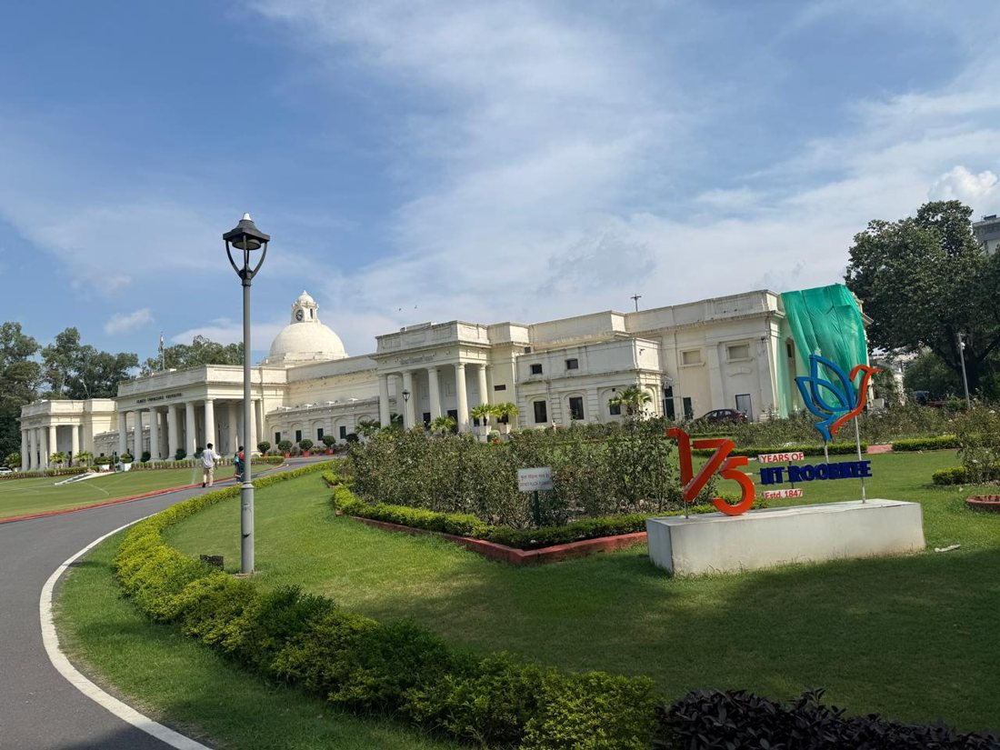

Blog
My First Day at IIT Roorkee
24 July 2026 is a date I will remember for a long time. It was the day I finally arrived at IIT Roorkee, a place I had dreamed of for so long, and I did not arrive alone. My father, mother and uncle came with me, and together we reached the campus by car. Seeing it up close for the first time made everything I had worked for feel real.
The day itself was devoted to registration, first for the institute and then for the hostel. Moving from one step to the next with my papers was hardly glamorous, but each completed form brought a quiet sense of achievement, as if I was being welcomed into this community one signature at a time.
My hostel is Sarojini Bhawan, and my room is DG-05, which I share with two roommates. Since I had already lived in a hostel during my JEE preparation, the routine felt familiar, and I settled in more easily than I had expected. I was not disappointed by the mess either; the food turned out to be quite good.
The highlight of the day was standing in front of the Thomson Building, the grand landmark that most of us have only ever seen in pictures. I took my own photographs there, and it was easily the most memorable moment of my first day. All around me were students who had come from different parts of India, each with their own story, all beginning the same journey.

A new chapter was beginning, and it was one I had always dreamed of.
By night, the excitement had given way to nervousness. It was the first time I was so far away from my family, and that distance suddenly felt real. Yet beneath the nervousness I was genuinely happy, because a new chapter of my life, the one I had always dreamed of, had begun.